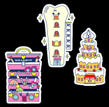
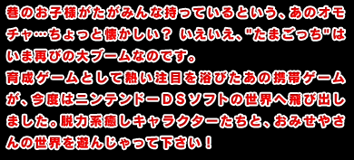
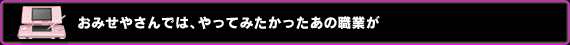
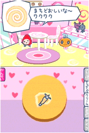
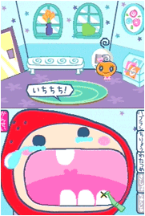
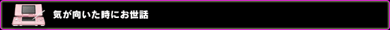
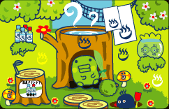

ソフトタイトルに『おみせっち』とあるだけに、色々なお店のお仕事が選べるのが今回の売り。お店は全部で11種類あり、それぞれタッチペンを使ったお仕事が要求されます。『ケーキやさん』を試してみると、まずお客さんがやってきて、「こういうケーキを下さいな」と注文されます。見本が表示されるので、下画面を使ってクリームや装飾、カットなどを同じようにしていくのです。
作品に対しては評価がつくのですが、操作がスムーズなのに対して、これが！ なかなか！ 満点が出ないのです！
ムキになって何度も「ケーキやさん」をしてしまいました…。
「歯医者さん」では虫歯治療をしたり、「たこ焼き屋さん」ではたこ焼きを作ったり。
一度はやってみたかった、あのお店屋さんが味わえてしまうということで、思っていた以上にハマりこみます。
|


|



本来のたまごっちは育成ゲームなので、お世話をしていくうちに成長し、いずれ死んでしまうというプログラムがありますが、こちらはその要素がありません。
あくまでお世話はたまごっちとのふれあいで、メインは「おみせやさん」を遊ぶことのようです。
"まめっち"、"めめっち"、"くちぱっち"と３種類いるたまごっちキャラのうち、誰か１人を選んでまずは自分の名前を入力。
緑色の…これはなんと形容すればいいのか…天然っぽい"くちぱっち"を選び、名前を『くらげっち』と入力しスタートしました。
なんとなく海の生物を彷彿とさせる外見に見えたんですよね…。
で、着替えをさせてみたりおやつを与えてみたりというお世話モードで、彼(？)の生態を観察し、仲良しになれるよう務めてみました。
タッチペンを使ってコチョコチョいじったのですが、どうも相互理解に至るまでは行かず。不思議な生き物です…。
ペットと違って甲斐甲斐しく手を出すよりも、気が向いた時にお世話するって感覚で良いのかなーと思います。
気が向いた時に手に取って、ちょっと遊んで、という気楽な遊び方が出来るので、まとまった時間が取れない人にオススメ。
それから、女性なら特にやってみたかった職業が満載なので、女性のユーザーさんはかなりハマっちゃうはずですよ！
|
|